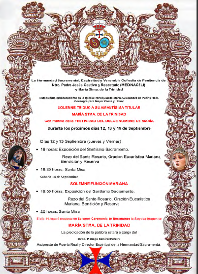
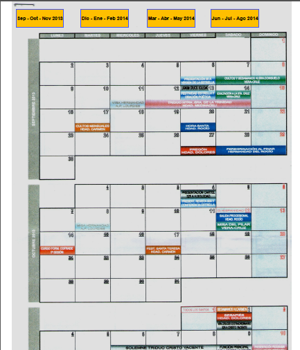
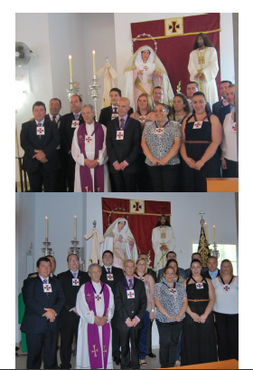
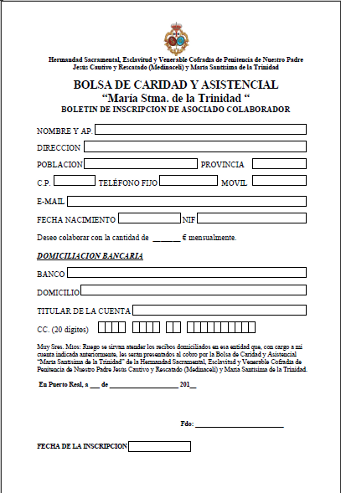
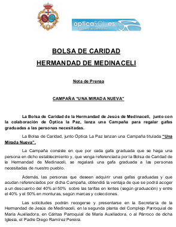

NOTICIAS COFRADES Las noticias que comienzan con * permiten acceder al contenido total de la noticia
pulsando sobre la imagen

Triduo los días 12, 13 y 14 de Septiembre en honor a Ntra. Sra.
Pulsa para acceder a toda la información
*
Actos y Cultos previstos en Puerto Real 2013-2014. Documento remitido por la Consejo Local de Hermandades y Cofradías de Puerto Real.
Pulsa sobre la imagen para acceder a toda la información.
-->
*
30 de Junio Juramento de la nueva Junta de Gobierno. Fotografías en la sección Multimedia. Gracias por vuestro apoyo.
*Desde nuestra Cofradía deseamos aportar un grano de arena mas contra la pobreza en nuestra tierra impulsando
una Bolsa de Caridad. El dinero de esta forma donado lo aportaremos a Cáritas. Ayuda a los mas necesitados y descargate esta solicitud.
-->
*Campaña 'Una Mirada Nueva'. Patrocinada por nuestra Cofradĩa y por la Óptica La Paz de Pto. Real, cada persona que acuda a dicha óptica a comprar unas
gafas no sólo obtendrá un descuento importante en su compra sino que además pondrá a disposición de los más necesitados unas gafas de manera gratuita. Pulsa sobre la imagen para obtener toda la información.